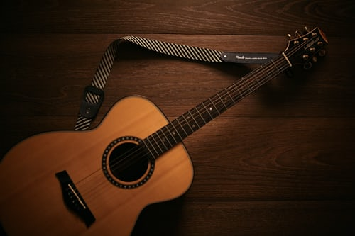

 Firmamız 2005 yılında İstanbul da kuruldu. Kurucumuz Murathan Solmaz (Müzisyen, Besteci, Yazar) 30 yıllık aktif müzisyenlik hayatına halen devam ettirmektedir. 8 yıldır aralıksız İstanbul Kadiköy'de ki mağazamızda müzikseverlere hizmet vermekteyiz. Tüm illere kargo ile ürün satışı yapmaktayız. Gelişen iletişim teknolojileri sayesinde sizlere daha güçlü hizmet verebilmek amacı ile, artık online satıştayız.
Firmamız aktif satış mağazası, geniş deposu, ve 200 m2 show room ile hizmet vermektedir. Sanal bir mağaza veya sanal bir dükkan değildir. Ciddi oranlarda stoklara sahiptir. Dilediğiniz her an gelip alacağınız ürünü deneyebilir, teknik konularda müşteri temsilcilerimiz aracılığı ile konu hakkında bilgi sahibi olabilirsiniz. Firmamız, internet üzerinden satış yapan ama sanal değil, reel bir firmadır. Aldığınız ürün arızalı veya beğenmediğiniz bir ürün ise 7 iş günü içinde ürününüz değişir veya sorgusuz para iadesi yapılır. Sitemizdeki sipariş ve iade koşularını tıklayarak daha detaylı bilgi alabilirsiniz. Dilediğiniz tüm müzikal enstrümanlar, garantili ve hesaplı şekilde size ulaşacaktır.